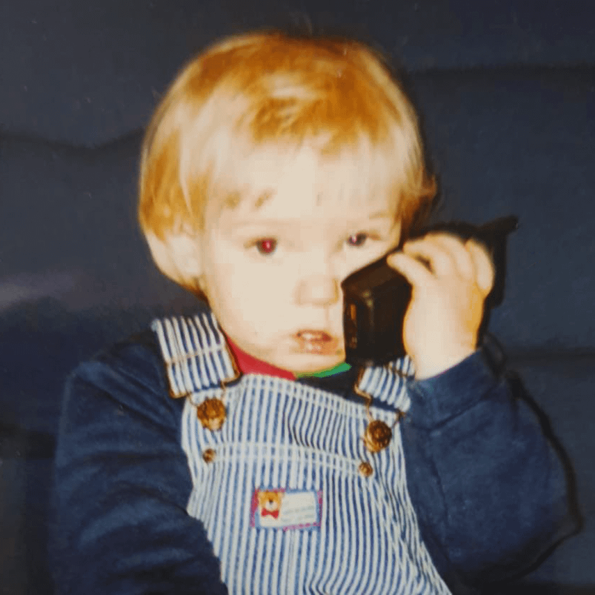

Začátky
Ohnepixel, vlastním jménem Mark Zimmermann, se narodil v roce 1998 v německém městě Lüneburg. Už od mládí ho bavily počítače a videohry. Když se dostal ke Counter-Striku, začal ho zajímat nejen samotný gameplay, ale také skiny a obchodování s nimi. Na rozdíl od většiny hráčů věnoval hodně času studování vzácných předmětů, jejich cen a historie. Postupně si vybudoval velké znalosti o skinové ekonomice, které mu později pomohly získat popularitu. Po škole odešel studovat IT do Nizozemska, kde zároveň začal tvořit první obsah na internetu.